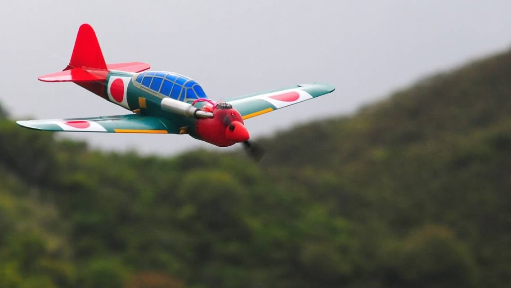
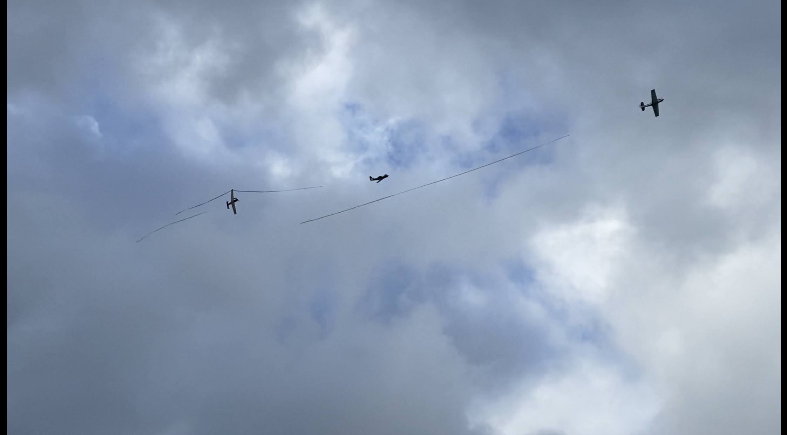

About Kawainui Combat Flyers
Kawainui Combat Flyers primairly flies 1/12 scale WWII remote control (RC) model airplanes made from coroplast (same material political signs are made from). Thirty foot 100% biodegradable flagging streamers are attaced to the aft section of each aircraft via kite string. The objective is to cut the streamers of other planes while preserving your own.
The planes are typically powered by two-stroke engines that use nitromethene as fuel. Engine performance is usually enhanced with the use of a header/mousse-can combonation. RC Combat planes can reach speed in excess of 100 MPH and most dogfighting is done at speeds between 60-80 MPH with combat rounds lasting around six minutes.